토목기사 (2003-03-16 기출문제)
1과목: 응용역학
1. 그림과 같은 1/4 원 중에서 빗금부분의 도심 yo 는?
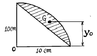
- 5.84 cm
- 7.81 cm
- 4.94 cm
- 5.00 cm
(정답률: 30%)

2. 다음 그림과 같은 변단면 Cantilever 보 A점의 처짐을 구하면?
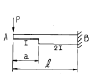
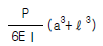
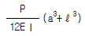
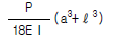
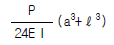
(정답률: 30%)
3. 그림과 같은 강봉이 2개의 다른 정사각형 단면적을 가지고 P하중을 받고 있을 때 AB가 1500kgf/cm2의 수직응력 (Nomal stress)을 가지면 BC에서의 수직응력은 얼마인가?
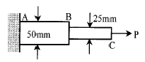
- 1,500kgf/cm2
- 3,000kgf/cm2
- 4,500kgf/cm2
- 6,000kgf/cm2
(정답률: 35%)
4. 단면에 전단력 V=75tonf가 작용할 때 최대 전단응력은?
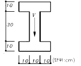
- 83 kgf/cm2
- 150 kgf/cm2
- 200 kgf/cm2
- 250 kgf/cm2
(정답률: 31%)
5. 단면 2차 모멘트가 I이고 길이가 ℓ인 균일한 단면의 직선상(直線狀)의 기둥이 있다. 그 양단이 고정되어 있을 때 오일러(Euler) 하중은? (단, 이 기둥의 영(Young)계수는 E 이다.)
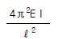
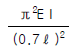
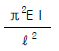
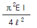
(정답률: 47%)
6. 어떤 인장부재를 시험하였더니 그 부재의 축신장도는 1.14 x 10-3 이었고 횡수축도 (橫收縮度)는 3.42 x 10이었다. 이 부재의 프와송(Poisson)의 비(ν)는?
- 0.1
- 0.2
- 0.3
- 3.0
(정답률: 33%)
7. 다음 그림과 같은 강봉의 양끝이 고정된 경우 온도가 30℃ 상승하면 양끝에 생기는 반력의 크기는? (단, E = 2.0×106 kgf/cm2, α = 1.0×10-5 (1/℃)이다.)
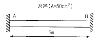
- 15tonf
- 20tonf
- 30tonf
- 40tonf
(정답률: 17%)
8. 그림과 같은 내민보에서 C점의 휨 모멘트가 영(零)이 되게 하기 위해서는 x가 얼마가 되어야 하는가?
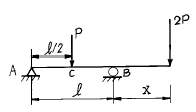
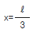
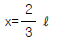
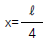
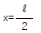
(정답률: 36%)
9. 그림과 같은 게르버보의 A점의 휨모멘트는?
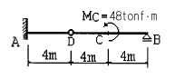
- 24tonf·m
- -24tonf·m
- 96tonf·m
- -96tonf·m
(정답률: 20%)
10. 길이 10m인 단순보 중앙에 집중하중 P = 2tonf가 작용할 때 중앙에서의 곡률 반지름 R 은? (단, I = 400 ㎝4, E= 2.1×106 kgf/cm2 임)
- 16.8 m
- 10 m
- 6.8 m
- 3.4 m
(정답률: 19%)
11. 그림과 같은 단면의 주축에 대한 단면 2차 모멘트가 각각 Ix = 72㎝4, Iy = 32㎝4 이다. x축과 30° 를 이루고 있는 u 축에 대한 단면 2차 모멘트가 Iu = 62㎝4 일 때 v축에 대한 단면 2차 모멘트 Iv 는?
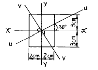
- Iv = 32 ㎝4
- Iv = 37 ㎝4
- Iv = 42 ㎝4
- Iv = 47 ㎝4
(정답률: 30%)
12. 그림과 같은 부정정보에 집중 하중이 작용할 때 A점의 휨 모멘트 MA를 구한 값은?
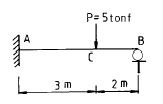
- -5.7 (tonf·m)
- -3.6 (tonf·m)
- -4.2 (tonf·m)
- -2.6 (tonf·m)
(정답률: 35%)
13. 그림과 같은 강재(steel) 구조물이 있다. AC, BC 부재의 단면적은 각각 10 cm2, 20 cm2 이고 연직하중 P = 6tonf 이 작용할 때 C점의 연직처짐을 구한 값은? (단, 강재의 종탄성계수는 2.⑤× 106 kgf/cm2 이다.)
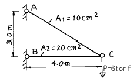
- 1.022 cm
- 0.767 cm
- 0.511 cm
- 0.383 cm
(정답률: 26%)
14. 그림과 같이 3활절(滑節)아아치에 등분포 하중이 작용할 때 휨모멘트도 (B.M.D)로서 옳은 것은?
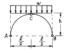
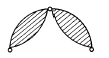
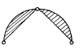
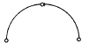
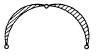
(정답률: 8%)
15. 그림과 같은 라멘 구조물의 A점에서 불균형 모멘트에 대한 부재 A1의 모멘트 분배율은?
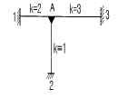
- 0.500
- 0.333
- 0.167
- 0.667
(정답률: 43%)
16. 다음 트러스에서
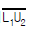
부재의 부재력은?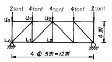
- 2.2 tonf (인장)
- 2.0 tonf (압축)
- 2.2 tonf (압축)
- 2.5 tonf (압축)
(정답률: 33%)
17. 다음 그림에서 처음에 P1이 작용했을 때 자유단의 처짐 δ 1이 생기고, 다음에 P2를 가했을 때 자유단의 처짐이 δ 2만큼 증가되었다고 한다. 이 때 외력 P1이 행한 일은?
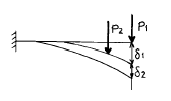
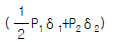
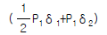
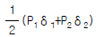
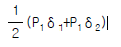
(정답률: 36%)
18. 그림의 AC, BC에 작용하는 힘 FAC, FBC 의 크기는?
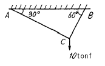
- FAC = 10tonf, FBC = 8.66tonf
- FAC = 8.66tonf, FBC = 5tonf
- FAC = 5tonf, FBC = 8.66tonf
- FAC = 5tonf, FBC = 17.32tonf
(정답률: 45%)
19. 정사각형의 목재 기둥에서 길이가 5m라면 세장비가 100 이 되기 위한 기둥단면 한 변의 길이로서 옳은 것은?
- 8.66 cm
- 10.38 cm
- 15.82 cm
- 17.32 cm
(정답률: 27%)
20. 재질과 단면이 같은 다음 2개의 외팔보에서 자유단의처짐을 같게 하는 P1/P2 의 값은?
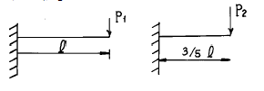
- 0.216
- 0.437
- 0.325
- 0.546
(정답률: 30%)
2과목: 측량학
21. 방위각 265° 에 대한 측선의 방위는?
- S85° W
- E85° W
- N85° E
- E85° N
(정답률: 26%)
22. 1/10,000의 지형도 제작에서 등고선 위치오차가 0.3mm, 높이 관측오차가 ± 0.2mm 로 하면 등고선 간격은 최소한 몇 mm 이상으로 해야 하는가?
- 3m
- 4m
- 5m
- 6m
(정답률: 14%)
23. 단곡선을 설치하기 위하여 교각(I)은 60° , 외선 길이 (E)는 15m로 할 때 곡선길이는?
- 85.2m
- 91.3m
- 97.7m
- 101.5m
(정답률: 37%)
24. 50m 의 스틸(steel)자로 4각형의 변장을 측정한 결과 가로, 세로 모두 30.00m 였다. 나중에 이 스틸자의 눈금을 기선척에 비교한 결과 50m 에 대해 1cm 늘어난 것을 발견했다. 이 때의 적오차는?
- 0.15m2
- 0.50m2
- 0.20m2
- 0.36m2
(정답률: 17%)
25. 우리나라의 수준측량에 있어서 1등 수준점의 왕복허용 오차는 얼마인가? (단, L은 편도거리(km)이다)
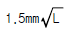
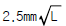
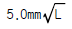
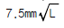
(정답률: 27%)
26. 축척 1/1,500 도면상의 면적을 축척 1/1,000으로 잘못 측정하여 24,000m2 를 얻었을 때 실제 면적은?
- 36,000m2
- 10,667m2
- 54,000m2
- 37,500m2
(정답률: 27%)
27. 다음 그림의 면적을 심프슨(Simpson) 제1법칙을 이용하여 구하면 얼마인가?
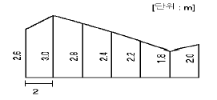
- 28.93m2
- 29.00m2
- 29.10m2
- 29.17m2
(정답률: 8%)
28. 초점거리 15cm 인 카메라로 경사각 30° 로 촬영된 사진상에 연직점 n과 등각점 j와의 거리는?
- 40.2mm
- 46.4mm
- 64.2mm
- 86.6mm
(정답률: 8%)
29. 교각 I=120° , 곡선반경 R=200m인 단곡선에서 교점 IP의 추가거리가 1439.25m일 때 곡선시점 BC의 추가거리는?
- 989.25m
- 1039.25m
- 1092.84m
- 1245.32m
(정답률: 26%)
30. 거리 100m에 대한 스타디아선의 읽기오차가 0.5cm일때 100m 떨어진 지점을 시거측량한 결과 고도각이 15° 였다면 시거측량에 의한 고저차의 측정오차는? (단, K=100, C=0 이다)
- 8.7cm
- 12.5cm
- 15.3cm
- 21.5cm
(정답률: 20%)
31. 축척 1/10,000로 촬영한 수직사진이 있다. 사진의 크기를 23㎝× 23㎝, 종중복도를 60%로 하면 촬영기선의 길이는?
- 920 m
- 1,380 m
- 690 m
- 1,610 m
(정답률: 36%)
32. Geoid에 대한 설명중 틀리는 것은?(오류 신고가 접수된 문제입니다. 반드시 정답과 해설을 확인하시기 바랍니다.)
- 평균 해수면을 육지까지 연장하는 가상적인 곡면을 Geoid라 하며, 이것은 준거타원체와 일치한다.
- Geoid는 중력장의 등포텐셜면으로 볼 수 있다.
- 실제로 Geoid면은 굴곡이 심하므로 측지측량의 기준 으로 채택하기 어렵다.
- 지구의 형은 평균해수면과 일치하는 Geoid면으로 볼 수 있다.
(정답률: 19%)
33. 지구상의 어떤 점에서 중력방향에 90° 를 이루는 평면은 무슨 면인가 ?
- 수준면(level surface)
- 수평면(horizontal plane)
- 기준면(datum level)
- 평균해면(mean sea level)
(정답률: 11%)
34. 1/50,000 국토기본도에서 표고 490m의 지점과 표고 3⑤m 지점 사이에 들어가는 주곡선의 수는?
- 8
- 9
- 10
- 11
(정답률: 30%)
35. 거리측정에서 생기는 오차중 우연오차에 해당되는 것은?
- 온도나 습도가 측정중에 변해서 생기는 오차
- 일직선상에서 측정하지 않기 때문에 생기는 오차
- 측정하는 줄자의 길이가 정확하지 않기 때문에 생기는 오차
- 줄자의 경사를 보정하지 않기 때문에 생기는 오차
(정답률: 30%)
36. 100m2의 정방형의 토지의 면적을 0.1m2까지 정확하게 구하고자 한다면 이에 필요한 거리관측정도는?
- 1/2,000
- 1/1,000
- 1/500
- 1/300
(정답률: 30%)
37. 한 측선의 자오선(종축)과 이루는 각이 60° 00' 이고 계산된 측선의 위거가 -60m 이고 경거가 -103.92m 일 때 이 측선의 방위와 길이를 구한 값은?
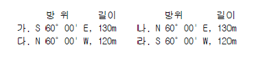
- 가
- 나
- 다
- 라
(정답률: 25%)
38. 유속측정에서 부자를 사용할 때 직류부의 유하거리는 다음중 어느 것이 가장 적당한가?
- 수면폭의 1‾배
- 수면폭의 2‾배
- 하천폭의 1‾배
- 하천폭의 2‾배
(정답률: 7%)
39. 노선의 곡선설치에 있어서 반경 R=500m, 노면마찰계수 f=0.1, 편구배 i=4% 일때 최대주행 속도 V는 얼마로 해야 하는가?
- 84km
- 94km
- 100km
- 120km
(정답률: 18%)
40. 단곡선 설치에 있어서 교각 I = 60°, 반경 R = 200 m, B.C = No.8 + 15m (20m x 8 + 15m)일 때 종단현에 대한 편각은 얼마인가?
- 38' 10"
- 42' 58"
- 1° 16' 20"
- 2° 51' 53"
(정답률: 31%)
3과목: 수리학 및 수문학
41. 그림과 같은 원형 관로에서 D1 = 300㎜, Q1 = 200ℓ /sec 이고 D2 = 200㎜, V2 = 2.5m/sec 인 경우 D3 = 150㎜에서의 유량 Q3 는?
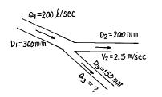
- 121.5 ℓ /sec
- 100.0 ℓ /sec
- 78.5 ℓ /sec
- 65.0 ℓ /sec
(정답률: 25%)
42. 다음 그림에서 A수조의 유속을 무시할 경우 유량 Q는? (단, 오리피스의 면적 a = 0.1m2, 유량계수 C = 0.6 임)
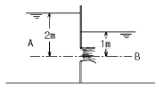
- 0.27 m3/s
- 0.24 m3/s
- 0.31 m3/s
- 0.21 m3/s
(정답률: 39%)
43. 그림과 같이 댐 여수로상에 설치된 회전식 수문의 꼭지점까지 물이 가득차 있다. 수문에 용하는 정수압의 수평분력과 연직분력을 각각 구하면? (단, 수문의 직경과 길이는 각각 2m임)
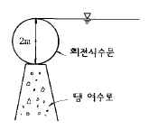
- 수평분력 = 4,000㎏ , 연직분력 = 1,570㎏
- 수평분력 = 4,000㎏ , 연직분력 = 785㎏
- 수평분력 = 3,140㎏ , 연직분력 = 2,000㎏
- 수평분력 = 4,000㎏ , 연직분력 = 3,140㎏
(정답률: 6%)
44. 동수경사선에 관한 설명 중 옳은 것은?
- 항상 에너지선 위에 있다.
- 항상 관로 위에 있다.
- 항상 흐름방향에 따라 아래로 기울어 진다.
- 에너지선에서 속도수두만큼 아래에 있다.
(정답률: 32%)
45. 바닥으로부터 거리가 y(m)일 때의 유속이 v = -4y2+y (m/s) 인 점성유체 흐름에서 전단력이 0가 되는 지점까지의 거리는?
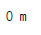
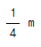
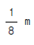
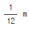
(정답률: 27%)
46. 설계홍수량 계산에 있어서 합리식의 적용에 관한 설명 중 옳지 않은 것은?
- 우수 도달시간은 강우 지속시간보다 길어야 한다.
- 강우강도는 균일하고 전유역에 고르게 분포되어야 한다.
- 유량이 점차 증가되어 평형상태일 때의 유출량을 나타낸다.
- 하수도 설계 등 소유역에만 적용될수 있다.
(정답률: 13%)
47. 수문기상에 대한 다음 설명 중 옳지 않은 것은?
- 우리나라에 편서풍이 불고 열대지방에 무역풍이 부는 것은 대기권내의 열순환과는 관계가 없다.
- DAD해석이란 최대우량깊이 - 유역면적 - 지속시간 사이의 관계를 분석하는 작업이다.
- 증발량은 증발접시에 의해 24시간 증발된 물의 깊이로 측정한다.
- 물의 순환은 지구상의 식물의 영향을 크게 받는다.
(정답률: 19%)
48. 가능최대강수량(Probable Maximum Precipitation)을 설명한 것 중 옳지 않은 것은?
- 수공구조물의 설계홍수량을 결정하는 기준으로 사용될 수 있다.
- 물리적으로 발생할 수 있는 강수량의 최대 한계치를 말한다.
- 예전에 일어났던 호우정보들부터 통계적 방법을 통하여 결정할 수 있다.
- 재현기간 200년을 넘는 확률 강수량만이 이에 해당 한다.
(정답률: 30%)
49. 어느 관측소의 자기우량기록이 다음 표와 같을 때 10분 지속 최대 강우강도는 ?
- 17㎜/hr
- 48㎜/hr
- 102㎜/hr
- 120㎜/hr
(정답률: 40%)
50. 다음 그림에서 P1과 평형을 이루도록 하기 위해 P2에 작용 시켜야 할 힘은?
- 4,400㎏
- 5,400㎏
- 6,400㎏
- 7,400㎏
(정답률: 33%)
51. 합성단위도의 모양을 결정하는 인자가 아닌 것은?
- 기저시간
- 첨두유량
- 지체시간
- 강우강도
(정답률: 13%)
52. 관수로에서 흐름이 층류인 경우 마찰계수 f는?
- 조도에만 영향을 받는다.
- Reynolds수에만 영향을 받는다.
- 조도와 Reynolds수에 영향을 받는다.
- 항상 0.2778의 값이다.
(정답률: 28%)
53. 개수로 흐름에 관한 다음 설명 중 틀린 것은?
- 사류에서 상류로 변하는 곳에 도수현상이 생긴다.
- 유량이 수심에 의해 확실히 결정되는 단면을 지배단면이라 한다.
- 비에너지는 수로 바닥을 기준으로 한 에너지이다.
- 배수곡선은 수로가 단락(段落)이 되는곳에 생기는 수면곡선이다.
(정답률: 30%)
54. 그림과 같이 A에서 분기된 관이 B에서 다시 합류하는 경우, 관Ⅰ과 관Ⅱ 의 손실수두를 비교하면?
- 관Ⅰ의 손실수두가 크다.
- 관Ⅱ의 손실수두가 크다.
- 두 관의 손실수두는 같다.
- 경우에 따라서 다르다.
(정답률: 36%)
55. 다음과 같은 굴착정(artesian well)의 유량을 구하는 식은? (단, R:영향원의 반지름)
(정답률: 35%)
56. 그림과 같은 직사각형 수로에서 수로 경사가 1/1,000인 경우 수로 바닥과 양벽면에 작용하는 평균 마찰응력은?
- 1.20kg/m2
- 1.⑤kg/m2
- 0.67kg/m2
- 0.82kg/m2
(정답률: 28%)
57. 다음 중 비에너지를 옳게 나타낸 것은? (단, He=비에너지, h=수심, V=유속, Q=유량, A=단면적, g=중력가속도, α =에너지보정계수이다.)
(정답률: 30%)
58. 작은 오리피스에서 단면 수축계수 Ca, 유속계수 Cv, 유량 계수 C 와의 관계가 옳게 표시 된것은?
(정답률: 32%)
59. 유속계수가 0.82인 직경 2㎝의 표준단관의 수두가 2.1m일 때 1분간 유출량은?
- 1.65 ℓ
- 32.5 ℓ
- 99.2 ℓ
- 165 ℓ
(정답률: 12%)
60. 수심 2m, 폭 4m 인 콘크리트 직사각형수로의 유량은? (단, 조도계수 n = 0.012, 경사Ⅰ= 0.0009 임)
- 15m3/s
- 20m3/s
- 25m3/s
- 30m3/s
(정답률: 25%)
4과목: 철근콘크리트 및 강구조
61. 강도설계법에 의한 전단 설계에 대한 설명 중 틀린 것은? (단, d = 유효 깊이, bw = 복부폭, fck = 콘크리트의 설계 기준 강도, Vu = 계수전단력, φVc = 콘크리트에 의한 전단강도)
- 일반적으로 전단 철근의 설계기준항복 강도는 4,000kgf/cm2를 초과할 수 없다.
- 전단 보강 철근이 부담하는 공칭 전단 강도 Vs는 이하라야 한다.
- 전단철근으로 사용된 스터럽은 압축연단에서 d/2 만큼 연장되어야 한다.
- 일반적으로 Vu가 φVc의 1/2을 초과하는 경우는 최소 단면적의 전단철근을 배근하여야 하는데, 슬래브와 기초판에는 최소 단면적의 전단철근을 배치하지 않아도 된다.
(정답률: 0%)
62. PS강재의 인장응력 fp = 11,000kgf/cm2 콘크리트의 압축응력 fc = 80kgf/cm2, 콘크리트의 크리프 계수 φt = 2.0, n = 6일 때 크리프에 의한 PS강재의 인장응력 감소율은 얼마인가?
- 7.6%
- 8.7%
- 9.6%
- 10.7%
(정답률: 28%)
63. 인장을 받는 표준 갈고리의 정착에 대한 기술 중 잘못된 것은? (단, db는 철근의 공칭지름)
- 갈고리는 인장을 받는 구역에서 철근 정착에 유효하다.
- 기본 정착 길이에 수정계수를 곱하여 정착길이를 계산하는데 이렇게 구한 정착길이는 항상 8db이상, 15㎝ 이상이어야 한다.
- 경량콘크리트의 수정계수는 1.0이다.
- 정착길이는 위험 단면으로부터 갈고리 외부끝까지의 거리로 나타낸다.
(정답률: 24%)
64. 철근 콘크리트 부재의 처짐은 지속하중 상태하에서 시간이 경과함에 따라 계속적으로 증가하게 된다. 장기 처짐에 가장 적게 영향을 미치는 것은?
- 콘크리트 크리프(creep)
- 콘크리트 건조수축(drying shrinkage)
- 철근 탄성계수
- 압축 철근의 양
(정답률: 10%)
65. 4변에 의해 지지되는 2방향 슬래브 중에서 1방향 슬래브로 보고 계산할 수 있는 경우는? (단, L: 2방향 슬래브의 장경간, S: 2방향 슬래브의 단경간)
(정답률: 24%)
66. 고장력 볼트를 사용한 이음 종류가 아닌 것은?
- 마찰이음
- 지압이음
- 압축이음
- 인장이음
(정답률: 13%)
67. 유효깊이에 대한 순경간의 비(ln/d)가 5보다 작고 부재의 상부 또는 압축면에 하중이 작용하는 휨부재는?
- 깊은 보
- 단순 보
- 단주
- 장주
(정답률: 13%)
68. 옹벽의 활동에 대한 저항력은 옹벽에 작용하는 수평력의 몇 배 이상이어야 하는가?
- 1.5배
- 2배
- 2.5배
- 3배
(정답률: 16%)
69. 폭 b = 30 cm, 유효 깊이 d = 40 cm, 높이 h = 55 cm, 철근량 As = 48cm2인 보의 균열 모멘트 Mcr의 값은? (단, fck = 210 kgf/cm2이다.)
- 7.84 tonf·m
- 5.25 tonf·m
- 3.62 tonf·m
- 4.38 tonf·m
(정답률: 19%)
70. 콘크리트설계기준의 요건에 따르면, fck = 380 kgf/cm2일때의 직사각형응력분포의 깊이를 나타내는 β 1의 값은 얼마인가?
- 0.78
- 0.92
- 0.80
- 0.75
(정답률: 38%)
71. 아래와 같은 맞대기 이음부에 발생하는 응력의 크기는? (단, P = 36,000kgf, 강판두께 12mm)
- 압축응력 fc = 144kgf/cm2
- 인장응력 ft = 30,000kgf/cm2
- 전단응력 τ = 1,500kgf/cm2
- 압축응력 fc = 1,200kgf/cm2
(정답률: 22%)
72. 그림과 같은 임의 단면에서 등가 직사각형 응력분포가 빗금친 부분으로 나타났다면 철근량 As는 얼마인가? (단, fck=210kgf/cm2, fy=4000kgf/cm2)
- 8.74cm2
- 11.61cm2
- 15.43cm2
- 21.09cm2
(정답률: 15%)
73. 강도설계에서 fck = 350㎏f/cm2 , fy = 3,500㎏f/cm2 를 사용하는 단철근보에 사용할 수 있는 대 인장철근비는?
- 0.020
- 0.024
- 0.028
- 0.032
(정답률: 6%)
74. 다음 띠철근 기둥이 최소 편심하에서 받을 수 있는 설계 축하중강도(φPn(max))는 얼마인가? (단, 축방향 철근의 단면적 Ast = 18.65 cm2, fck = 280kgf/cm2, fy = 3,000 kgf/cm2이고 기둥은 단주이다.)
- 249.0 tonf
- 298.7 tonf
- 307.5 tonf
- 199.8 tonf
(정답률: 14%)
75. 부재의 순단면적을 계산할 경우 지름 22mm의 리벳을 사용 하였을 때 리벳 구멍의 지름은 얼마인가?(오류 신고가 접수된 문제입니다. 반드시 정답과 해설을 확인하시기 바랍니다.)
- 22.5mm
- 25mm
- 24mm
- 23.5mm
(정답률: 16%)
76. 계수 하중에 의한 단면의 계수 모멘트가 Mu = 35tonf·m 인단철근 직사각형 보의 유효깊이는? (단, ρ =0.0135, b=30cm, fck=240kgf/cm2, fy=3000kgf/cm2)
- 28 cm
- 38 cm
- 58 cm
- 61 cm
(정답률: 7%)
77. 보의 파괴형상 중 설계시 반드시 따르도록 하는 것은?
- 균열이 발생함과 동시에 생기는 파괴
- 균형단면의 균형파괴
- 과다 철근 단면의 취성파괴
- 과소 철근 단면의 연성파괴
(정답률: 18%)
78. 철근콘크리트 구조물의 강도설계법에서 사용되는 강도감 소계수에 대한 다음 설명 중 잘못된 것은?
- 휨모멘트에 대한 강도감소계수는 보통 철근콘크리트 부재에서는 0.85 이지만 프리스트레스트 크리트 부재의 경우에는 0.9 이다.
- 축압축력에 대한 강도감소계수는 나선철근으로 보강된 철근콘크리트 부재에서는 0.75 이지만 그 밖의 경우에는 0.7 이다.
- 전단력에 대한 강도감소계수는 0.80 이다.
- 무근콘크리트에 대한 강도감소계수는 0.65이다.
(정답률: 11%)
79. 그림과 같은 포스트텐션보에 120tonf의 초기 프리스트레스를 도입했다. w=2tonf/m 의 하중이 작용할 때 지간 중앙단면에 생기는 콘크리트의 응력은 얼마인가? (단, 손실은 15% 로 가정하고 자중은 무시한다.)
- 상연 208.5 kgf/cm2 , 하연 -38.5 kgf/cm2
- 상연 250 kgf/cm2 , 하연 0
- 상연 278.4 kgf/cm2 , 하연 26.7 kgf/cm2
- 상연 186.6 kgf/cm2 , 하연 -16.5 kgf/cm2
(정답률: 18%)
80. 직사각형 보에서 전단철근이 부담해야 할 전단력 Vs가 30tonf일 때 전단철근의 간격 s는 최대 얼마 이하라야 하는가? (단, 수직스터럽의 단면적 Av=7.0cm2, bw=35cm, d=60cm, fck=210kgf/cm2, fy=4,000kgf/cm2이다.)
- 25cm
- 30cm
- 35cm
- 40cm
(정답률: 14%)
5과목: 토질 및 기초
81. 물로 포화된 실트질 세사(細砂)의 N치를 측정한 결과 N = 33이 되었다고 할때 수정 N치는? (단,측정지점까지의 롯드(Rod)길이는 35m이다.)
- 43
- 35
- 21
- 18
(정답률: 11%)
82. 모래지반에 30cm× 30cm의 재하판으로 재하실험을 한 결과 10t/m2의 극한 지지력을 얻었다. 4m× 4m의 기초를 설치할때 기대되는 극한지지력은?
- 10t/m2
- 100t/m2
- 133t/m2
- 154t/m2
(정답률: 29%)
83. 연약점성토층을 관통하여 철근콘크리트 파일을 박았을 때 부마찰력(Negative friction)은? (단, 이때 지반의 일축압축강도 qu=2t/m2, 파일직경 D=50㎝, 관입깊이 ℓ =10m 임)
- 15.71t
- 18.53t
- 20.82t
- 24.24t
(정답률: 19%)
84. 습윤단위중량이 2.0t/m3, 함수비 25%, 비중이 2.7인 경우 건조밀도와 포화도는?
- 1.93t/m3, 97.8%
- 1.6t/m3, 92.3%
- 1.93t/m3, 92.3%
- 1.6t/m3, 97.8%
(정답률: 21%)
85. 선행압밀하중을 결정하기 위해서는 압밀시험을 행한 다음 어느 곡선으로부터 구할수 있는가?
- 간극비 - 압력(log 눈금)곡선
- 압밀계수 - 압력(log 눈금)곡선
- 일차 압밀비 - 압력(log 눈금)곡선
- 이차 압밀계수 - 압력(log 눈금)곡선
(정답률: 10%)
86. Terzaghi는 포화점토에 대한 1차 압밀이론에서 수학적 해를 구하기 위하여 다음과 같은 가정을 하였다. 이 중 옳지 않은 것은?
- 흙은 균질하다.
- 흙입자와 물의 압축성은 무시한다.
- 흙속에서의 물의 이동은 Darcy 법칙을 따른다.
- 투수계수는 압력의 크기에 비례한다.
(정답률: 28%)
87. 다짐에 대한 다음 사항중 옳지 않은 것은?
- 점토분이 많은 흙은 일반적으로 최적함수비가 낮다.
- 사질토는 일반적으로 건조밀도가 높다.
- 입도배합이 양호한 흙은 일반적으로 최적함수비가 낮다.
- 점토분이 많은 흙은 일반적으로 다짐곡선의 기울기가 완만하다.
(정답률: 22%)
88. 말뚝재하시험시 연약점토지반인 경우는 pile의 타입 후20 여일이 지난 다음 말뚝재하시험을 한다. 그 이유는?
- 주면 마찰력이 너무 크게 작용하기 때문에
- 부마찰력이 생겼기 때문에
- 타입시 주변이 교란되었기 때문에
- 주위가 압축되었기 때문에
(정답률: 28%)
89. 다음 그림에서 한계동수구배를 구하여 분사현상에 대한 안전율을 구하면?(단,모래의 Gs = 2.65, e = 0.65이다.)
- 1.0
- 1.3
- 1.6
- 2.0
(정답률: 29%)
90. 노건조된 점토시료의 중량이 12.38g, 수은을 사용하여 수축한계에 도달한 시료의 용적을 측정한 결과가 5.98cm3 일 때의 수축한계는? (단,비중은 2.65이다.)
- 10.6(%)
- 12.5(%)
- 14.6(%)
- 15.5(%)
(정답률: 11%)
91. 물의 표면장력 T=0.075 g/㎝, 물과 유리관벽과의 접촉각 이 0° , 유리관의 지름 D=0.01㎝ 일때, 모관수의 높이 hc는?
- 30㎝
- 28㎝
- 25㎝
- 20㎝
(정답률: 20%)
92. 어떤 흙의 전단실험결과 C=1.8kg/cm2, φ=35o, 토립자에 작용하는 수직응력 σ =3.6kg/cm2일 때 전단강도는?
- 4.89kg/cm2
- 4.32kg/cm2
- 6.33kg/cm2
- 3.86kg/cm2
(정답률: 31%)
93. 내부 마찰각 φ=0인 점토로 일축압축 시험을 시행하였다. 다음 설명중 옳지 않은 것은?
- 점착력의 크기는 일축압축 강도의 1/2이다.
- 전단강도의 크기는 점착력의 크기의 1/2이다.
- 파괴면이 주응력면과 이루는 각은 45° 이다.
- Mohr의 응력원을 그리면 그 반경이 점착력의 크기와 같다.
(정답률: 20%)
94. 표준관입시험(SPT)에 대하여 옳지 않은 것은?
- 지하수위를 알아내기 위하여 하는 현장시험의 일종이다
- N값이 클수록 지반의 강도는 크고 침하가능성은 적다
- 흐트러지지 않은 시료는 얻을수 없다
- 모래지반의 상대밀도, 점토의 컨시스텐시의 개략적 추정이 가능하다.
(정답률: 13%)
95. 다음중 Rankine 토압론의 기본가정에 속하지 않는 것은?
- 흙은 비압축성이고 균질의 입자이다.
- 지표면은 무한히 넓게 존재한다.
- 옹벽과 흙과의 마찰을 고려한다.
- 토압은 지표면에 평행하게 작용한다.
(정답률: 22%)
96. rod에 붙인 어떤 저항체를 지중에 넣어 타격관입, 인발 및 회전할 때의 흙의 전단강도를 정하는 원위치 시험은?
- 보링(boring)
- 사운딩(sounding)
- 시료채취(sampling)
- 비파괴 시험(NDT)
(정답률: 20%)
97. 다음의 지반개량공법 중 탈수(脫水)를 주로하는 공법이 아닌 것은?
- 웰 포인트 공법
- 샌드 드레인 공법
- 프리로딩(Preloading) 공법
- 바이브로 후로테이숀 공법
(정답률: 26%)
98. 그림과 같은 점토층의 압밀속도를 계산한 결과 90%압밀에 소요되는 시간이 5년이었다. 만일 암반층 대신 모래층이 존재한다면 압밀소요 시간은?
- 10년
- 5년
- 2.5년
- 1.25년
(정답률: 10%)
99. 내부마찰각 φu = 0, 점착력 Cu = 4.5t/m2, 단위중량이 1.9t/m3되는 포화된 점토층에 경사각 5°로 높이 8m인 사면을 만들었다. 그림과 같은 하나의 파괴면을 가정했을때 안전율은? (단, ABCD의 면적은 70m2이고, ABCD의 무게중심은 O점에 서 4.5m거리에 위치하며, 호 AC의 길이는 20.0m이다.)
- 1.2
- 1.8
- 2.5
- 3.2
(정답률: 20%)
100. 지표면에 집중하중이 작용할때 지중연직응력(地中鉛直應力)에 관한 다음사항중 옳은 것은? (단,Boussinesq이론을 사용)
- 흙의 영(young)율 E에 무관하다.
- E에 정비례한다.
- E의 제곱에 정비례한다.
- E의 제곱에 반비례한다.
(정답률: 12%)
6과목: 상하수도공학
101. 효율이 0.8인 펌프 2대를 이용하여 취수탑에서 100,000m3/일의 수량을 손실수두를 포함하여 20m 높이에 있는 도수로에 끌어 올리려 한다. 펌프 한대의 소요동력 은 몇 kW가 되는가?
- 113.2kW
- 90.6kW
- 141.2kW
- 283.0kW
(정답률: 36%)
102. 다음중 음료수의 수질기준에 부적합한것은?
- 납은 0.⑤mg/ℓ 를 넘지 아니할 것
- 페놀은 0.0⑤mg/ℓ 를 넘지 아니할 것
- 경도는 100mg/ℓ 를 넘지 아니할 것
- 황산은 200mg/ℓ 를 넘지 아니할 것
(정답률: 6%)
103. 취수지점(수원)으로부터 소비자까지 전달되는 일반적 상수도의 구성순서로 올바른 것은?
- 도수-정수장-송수-배수지-급수-배수
- 송수-정수장-도수-배수지-급수-배수
- 도수-정수장-송수-배수지-배수-급수
- 송수-정수장-도수-배수지-배수-급수
(정답률: 34%)
104. 활성슬러지법에서 MLSS란 무엇을 뜻하는가?
- 방류수 중의 부유물질
- 반송슬러지의 부유물질
- 폐수 중의 부유물질
- 폭기조 내의 부유물질
(정답률: 37%)
1⑤. 하천 밑을 통과하는 역사이펀 관로가 있다. 이 관로의 길이는 500m, 관경은 500mm이고, 경사는 0.3%라고 한다. 또 한 이 관의 Manning 조도계수 n값은 0.013이라고 한다. 역사이펀 관로의 기타 미소손실이 총 5cm수두라고 할때 상기의 관로에서 일어나는 총손실수두와 유량은?
- 손실수두 1.63m, 유량 0.207m3/s
- 손실수두 1.61m, 유량 0.207m3/s
- 손실수두 1.63m, 유량 0.827m3/s
- 손실수두 1.61m, 유량 0.827m3/s
(정답률: 13%)
106. 펌프의 공동현상을 방지하기 위한 흡입양정의 표준으로 옳은 것은?
- -11m 까지
- -9m 까지
- -7m 까지
- -5m 까지
(정답률: 19%)
107. 하수관거 내에서의 부유물 침전을 막기 위하여 요구되는 최소 유속은 얼마인가?
- 0.3m/s
- 0.6m/s
- 1.2m/s
- 2.1m/s
(정답률: 9%)
108. 하수배제 방식에 관한 설명중 잘못된 것은?
- 합류식과 분류식은 각각의 장단점이 있으므로 도시의 실정을 충분히 고려하여 선정할 필요가 있다.
- 합류식은 우천시 오수가 우수에 섞여서 공공수역에 유출되기 때문에 수질보존 대책이 필요하다.
- 분류식은 우천시 우수가 전부 공공수역에 방류되기 때문에 합류식에 비해 우천시 오탁의 문제는 없다.
- 분류식의 처리장에서는 시간에 따라 오수 유입량의 변동이 크므로 조정지 등을 통하여 유입량을 조정하면 유지관리가 쉽다.
(정답률: 18%)
109. 초산의 이온화 상수는 25℃에서 1.75絨10-5이다. 5℃에서 0.015M 초산용액의 pH는 얼마인가?
- 2.51
- 3.39
- 4.27
- 5.83
(정답률: 8%)
110. 활성슬러지법에서 BOD 용적 부하를 옳게 표현한 것은?
(정답률: 29%)
111. 그림과 같은 저수지에서 직경 500mm관으로 유량 0.2m3/s 를 저수지 수면에서 30m 되는 고지대로 압송한다. 고지대의 압력이 1.5kg/cm2를 유지하도록 하려면 펌프의 축마력은 얼마로 하여야 하는가? (단, 관의 길이는 2,000m, 마찰손실계수는 0.028, 펌프의 효율은 75%라고 함.)
- 125Hp
- 136Hp
- 152Hp
- 181Hp
(정답률: 7%)
112. 하수 처리방법 중 표준 활성슬러지법과 그 흐름도가 기본적으로 같은 것은?
- 산화구법
- 접촉안정화법
- 장기폭기법
- 계단식폭기법
(정답률: 4%)
113. 하천 및 저수지의 수질해석을 위한 수학적 모형을 구성하 고자 할때 가장 기본이 되는 수학적 방정식은 무엇에 기초로 하는가?
- 에너지보존의 식
- 질량보존의 식
- 운동량보존의 식
- 난류의 운동방정식
(정답률: 29%)
114. BOD가 60mg/ℓ 인 하수처리장 유출수가 5000m3/day의 비율 로 하천에 방류된다. 하수가 출되기 전 하천의 BOD는 2mg/ℓ 이며, 유량은 0.5m3/s이다. 하수처리장 유출수가 방류되는 순간 천수와 완전 혼합된다고 가정할 때 합류지점의 BOD농도는 얼마인가?
- 10.0mg/ℓ
- 9.0mg/ℓ
- 8.0mg/ℓ
- 7.0mg/ℓ
(정답률: 8%)
115. 수원(水源)에 관한 설명중 틀린 것은?
- 용천수는 지하수가 자연적으로 지표로 솟아나온 것으로 그 성질은 대개 지표수와 비슷하다.
- 심층수는 대지의 정화작용으로 인해 무균 또는 거의이에 가까운 것이 보통이다.
- 복류수는 어느 정도 여과된 것이므로 지표수에 비해 수질이 양호하며, 대개의 경우 침전지를 생략할 수 있다.
- 천층수는 지표면에서 깊지 않은 곳에 위치함으로서 공기의 투과가 양호하므로 산화작용이 발하게 진행 된다.
(정답률: 23%)
116. 오수관거의 최소 관경은 다음중 어느 것인가?
- 400mm
- 350mm
- 300mm
- 250mm
(정답률: 28%)
117. 하수의 최종 BOD가 5일 BOD의 1.8배라면 상용대수(밑수 10)를 사용할 때의 탈산소계수는 약 얼마인가 ?
- 0.⑤/일
- 0.07/일
- 0.09/일
- 0.11/일
(정답률: 9%)
118. Stokes의 침강속도를 구하는 식은? (단, Vs는 침강속도, ρ S및 ρ 는 토립자 및 물의 밀도, g는 중력가속도, μ 는 점성계수, d는 토립자의 입경)
(정답률: 27%)
119. 수돗물의 염소처리에서 잔류염소 농도를 0.4ppm 이상으로 강화해야 할 경우에 해당되지 않는 않은?
- 소화기 계통의 전염병이 유행할 때
- 정수작업에 이상이 있을 때
- 단수후 또는 수압이 감소할 때
- 철, 망간의 성분이 함유되어 있을 때
(정답률: 12%)
120. 다음은 관로시설의 설계시 계획하수량의 결정 내용이다. 잘못된 것은 ?
- 우수관거 : 계획우수량
- 오수관거 : 계획일최대오수량
- 합류관거 : 계획시간최대오수량+계획우수량
- 차집관거 : 우천시 계획오수량
(정답률: 16%)